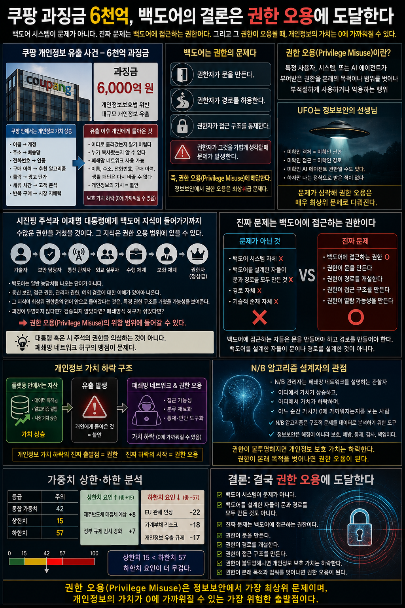

쿠팡 개인정보 유출 사태에 6천억 원대 과징금이 부과되었다.
겉으로 보면 이것은 대형 플랫폼의 개인정보 유출 사고다. 개인정보보호법 위반에 대한 행정 제재이고, 기업 규제 강화의 대표적 사례처럼 보일 수 있다. 그러나 참소식의 관점에서 보면 이 사건은 단순한 보안 사고가 아니다.
이 사건은 개인정보의 가치가 어디에서 상승하고, 어디에서 하락하며, 어떤 순간 0에 가까워질 수 있는지를 보여주는 사건이다.
그리고 이 포스팅의 결론은 결국 권한 오용에 도달한다.
핵심 관점
여기서 말하는 권한 오용은 단순히 누군가가 불법으로 무엇을 했다고 단정하는 말이 아니다. 정보보안 관점에서 봤을 때, 백도어에 접근하기 위해 필요한 권한, 그 권한이 만드는 문, 그 권한이 만드는 경로, 그리고 그 권한이 개인정보 가치에 미치는 영향을 말하는 것이다.
전제를 바로 잡아야 한다
쿠팡 시스템은 허접해서 털린 것이 아니다.
오히려 쿠팡은 한국에서 가장 고도화된 플랫폼 중 하나다. 물류, 배송, 결제, 회원 관리, 추천 시스템, 데이터 처리, 고객 유지 구조까지 높은 수준의 기술력을 가진 시스템이다. 그러므로 쿠팡 안에 들어간 개인정보는 단순한 이름, 주소, 전화번호가 아니었다.
쿠팡 안에서 개인정보는 플랫폼 가치와 결합된다
- 이름은 계정이 된다.
- 주소는 배송망이 된다.
- 전화번호는 인증 수단이 된다.
- 구매 이력은 추천 알고리즘의 재료가 된다.
- 클릭은 광고 단가가 된다.
- 체류 시간은 고객 분석이 된다.
- 반복 구매는 시장 지배력의 근거가 된다.
즉 쿠팡 시스템 안에서는 개인정보의 가치가 상승한다.
사람의 개인정보가 거대한 플랫폼 안으로 들어가면 그것은 단순한 개인정보가 아니라 플랫폼 자산이 된다. 구매 이력, 배송 동선, 결제 흐름, 생활 패턴, 광고 반응, 클릭 데이터와 결합되면서 더 높은 경제적 가치를 가진다.
그래서 쿠팡 개인정보 유출은 더 심각하다.
가치가 낮은 정보가 털린 것이 아니다.
가치가 높은 시스템 안에 있던 정보가 털린 것이다.
개인정보 유출의 가장 기괴한 지점
쿠팡 안에서는 개인정보의 가치가 상승했다. 하지만 유출되는 순간 개인에게 돌아온 것은 가치가 아니라 불안이었다.
개인은 자기 정보가 어디로 흘러갔는지 알기 어렵다. 누가 복사했는지 알 수 없다. 어떤 폐쇄망 네트워크 안에서 사용될지 확인하기 어렵다. 이름, 주소, 전화번호, 구매 이력, 생활 패턴은 다시 새것으로 바꿀 수 없다.
비밀번호는 바꿀 수 있다.
카드는 재발급할 수 있다.
하지만 생활의 흔적은 재발급할 수 없다.
이것이 개인정보 유출의 가장 기괴한 지점이다.
플랫폼 안에서는 개인정보가 자산이었지만, 유출 이후 개인에게 남는 것은 위험이다.
N/B 알고리즘 개발자의 관점
여기서 N/B 알고리즘 개발자의 관점이 들어간다.
N/B 관리자는 단순히 숫자를 보는 사람이 아니다. N/B 관리자는 폐쇄망 네트워크를 설명하는 관찰자다. 어떤 구조에서 가치가 상승하고, 어떤 구조에서 가치가 하락하며, 어느 순간 그 가치가 0에 가까워지는지를 보는 사람이다.
나는 N/B 알고리즘 설계자이기 전에 정보보안을 전공한 사람의 위치에서 이 문제를 본다. 정보보안에서 권한 문제는 매우 중요하다. 특히 권한 오용은 최상위급 문제로 다뤄질 수 있다.
권한 오용 (Privilege Misuse)
특정 사용자, 시스템, 또는 AI 에이전트가 부여받은 권한을 본래의 목적이나 범위를 벗어나 부적절하게 사용하거나 악용하는 행위를 뜻한다.
즉 권한이 없는 사람이 몰래 들어오는 것만이 문제가 아니다.
권한을 가진 사람이 그 권한을 본래 목적과 다르게 쓰는 것이 더 심각한 문제가 될 수 있다.
외부 해커가 시스템을 공격하는 것도 심각하다. 하지만 내부 권한자나 관리자급 권한을 가진 사람이 접근 경로를 잘못 만들거나, 필요 이상의 권한을 유지하거나, 통제되지 않는 예외 경로를 허용하면 문제는 더 깊어진다.
외부 공격은 침입이다.
권한 오용은 내부 신뢰의 붕괴다.
외부 침입은 비정상 접근으로 보일 수 있다. 그러나 권한 오용은 정상 접근처럼 보일 수 있다. 그래서 권한 오용은 장기적이고 집요한 문제가 될 수 있다.
간단하게 예를 들어보자. 공중 화장실로 비유할 수 있다.
공중 화장실에 청소부가 들어가는 것은 자연스러운 권한자 예시다. 사용자 또한 수시로 들어갈 수 있다. 그런데 이때 청소부가 수시로 들어간다고 생각해보자. 사용자보다 청소부가 화장실에 들어가는 횟수가 많다고 가정하면, 개인정보는 권한 오용으로 인해서 가치가 0이 되는 것이다.
화장실의 사용자들은 청소부로 인해서 불편해하고 화장실의 가치는 하락하게 될 것이다. 백도어에 있는 개인정보도 마찬가지다. 누군가 열람했다는 것은 사용자가 아닌 권한자일 가능성이 매우 크기 때문이다.
백도어의 진짜 문제
백도어의 진짜 문제도 여기에 있다.
백도어는 단순 해킹이 아니다.
백도어는 권한의 문제다.
그러나 여기서 더 정확히 말해야 한다.
핵심 구분
문제는 백도어 시스템 자체가 아니다.
진짜 문제는 백도어에 접근하는 권한이다.
백도어는 시스템 안에 존재할 수 있다. 복구 경로, 예외 처리, 최초 설정값 확인, 관리자급 복원 구조처럼 기술적으로 필요한 개념이 있을 수 있다. N/B 알고리즘에도 기술적으로 보면 백도어에 가까운 개념은 존재할 수 있다.
하지만 그것이 곧바로 문제가 되는 것은 아니다.
백도어를 설계한 자들이 반드시 문을 만들거나 경로를 설계한 것은 아니다
백도어에 접근하려는 자들이 자신이 가진 권한을 이용해 문을 만들고, 경로를 개설하고, 접근 구조를 형성하는 것이 핵심이다.
- 권한이 먼저다.
- 그 권한으로 문을 만든다.
- 그 권한으로 경로를 개설한다.
- 그 권한으로 열람 구조를 만든다.
- 그 권한으로 접근 가능성을 만든다.
그러므로 백도어의 진짜 문제는 경로가 아니다.
권한이다.
- 경로는 권한이 만든 결과물이다.
- 문은 권한이 만든 결과물이다.
- 접근 구조도 권한이 만든 결과물이다.
권한이 없으면 문을 만들 수 없다.
권한이 없으면 경로를 개설할 수 없다.
권한이 없으면 백도어를 열람할 수 없다.
정보보안 관점에서 핵심 질문
그러므로 정보보안 관점에서 핵심 질문은 이것이다.
- 백도어가 있었는가가 아니다.
- 누가 백도어에 접근할 권한을 가졌는가다.
- 누가 문을 만들 권한을 가졌는가.
- 누가 경로를 열 권한을 가졌는가.
- 누가 접근 구조를 만들 권한을 가졌는가.
- 누가 그 권한을 승인했는가.
- 누가 그 권한을 기록했는가.
- 누가 그 권한을 감사했는가.
이 질문에 답하지 못하면 개인정보의 보호 가치는 흔들린다.
시진핑 주석과 이재명 대통령의 통신 보안
이 지점에서 시진핑 주석과 이재명 대통령의 통신 보안, 백도어 관련 대화가 중요해진다.
필자는 대통령이나 시 주석의 권한 자체를 의심하는 것이 아니다. 대통령 혹은 국가 정상급 인물이 가진 공식 권한을 문제 삼는 것이 아니다.
필자가 보는 맹점은 따로 있다.
백도어라는 지식이 시진핑 주석과 이재명 대통령의 대화 속으로 들어가기까지, 그 지식은 수많은 권한의 경로를 거쳤을 가능성이 크다는 점이다.
백도어는 일반적인 농담처럼 아무 데서나 튀어나오는 단어가 아니다. 통신 보안, 기기 보안, 접근 권한, 정보 통제, 관리자 권한, 예외 경로에 대한 이해가 있어야 나올 수 있는 말이다.
그 지식이 최상위 권한층의 언어 안으로 들어갔다는 것은, 그 지식이 단순한 개인 상식이 아니라 특정 권한 구조를 거쳐 올라왔을 가능성을 보여준다.
이 지점이 권한 오용의 범위로 이어진다
- 대통령의 권한을 의심하는 것이 아니다.
- 시 주석의 권한을 의심하는 것이 아니다.
- 문제는 그 권한까지 백도어 지식이 전달되는 과정이다.
- 누가 그 지식을 만들었는가.
- 누가 그 지식을 전달했는가.
- 누가 그 지식을 설명했는가.
- 누가 그것을 권한자의 언어로 올렸는가.
- 그 과정에서 정보보안 원칙은 지켜졌는가.
- 그 과정에 폐쇄망 네트워크식 허구가 섞였는가.
이 질문이 중요하다.
폐쇄망 네트워크의 허구
쉽게 말하면 필자가 보는 맹점은 폐쇄망 네트워크의 허구다.
폐쇄망 네트워크는 마치 자신들이 숨겨진 진실을 알고 있는 것처럼 행동할 수 있다. 하지만 정보보안 관점에서 보면 폐쇄망 네트워크는 보호 구조가 아니다. 오히려 권한 오용의 가능성이 높은 구조가 될 수 있다.
폐쇄된 정보망 안에서 지식이 검증 없이 이동하고, 특정 권한자에게 전달되고, 그 지식이 마치 공식 이해처럼 소비된다면 매우 위험하다.
백도어 지식도 마찬가지다.
백도어를 기술적으로 정확히 이해하지 못한 상태에서, 그것을 권한자의 농담이나 통신 보안 확인처럼 다룬다면 문제는 심각해진다. 백도어는 웃고 넘길 단어가 아니다. 백도어는 권한, 접근통제, 예외 경로, 기록, 감사, 책임과 연결된 정보보안의 핵심 문제다.
그런 지식이 최상위 권한층까지 올라갔다면, 그 과정 자체가 권한 오용의 위험 범위에 들어온다.
다시 말하지만
이것은 정치적 공격이 아니다.
이것은 정보보안 관점이다.
정보보안은 해킹을 잘하는 기술이 아니다. 정보보안은 보호, 예방, 통제, 감사, 책임이다. 권한은 기록되어야 하고, 권한은 승인되어야 하며, 권한은 목적이 제한되어야 한다. 그리고 권한은 남용되거나 오용되어서는 안 된다.
쿠팡 과징금 6천억 사건에 연결하기
이제 이 관점을 쿠팡 과징금 6천억 사건에 연결해 본다.
쿠팡 시스템 안에서 개인정보는 고가치 플랫폼 자산이었다. 그러나 유출 이후 개인에게 돌아온 것은 자산이 아니라 불안이었다. 그리고 그 정보가 폐쇄망 네트워크와 권한 오용 가능성 안으로 들어가는 순간, 개인 기준의 보호 가치는 급락한다.
여기서 중요한 점은 단순 유출이 아니다.
개인정보 가치가 하락하는 진짜 지점은 권한이다.
더 정확히 말하면, 개인정보에 접근할 수 있는 권한 구조다.
권한자가 정보를 다룰 수 있다고 착각하는 순간, 개인정보는 보호 대상이 아니라 분류 재료가 된다. 폐쇄망 네트워크가 개인정보를 다루려고 하는 순간, 개인정보는 권리가 아니라 판단의 근거가 되고, 사적 평판망의 연료가 되고, 통제의 재료가 될 수 있다.
이것이 가장 위험한 지점이다
폐쇄망 네트워크는 정보 보호 구조가 아니다. 그것은 정보 분류 구조에 가깝다. 누군가의 개인정보를 기준으로 사람을 나누고, 판단하고, 배제하고, 평판화하고, 사적으로 심판하는 구조가 될 수 있다.
폐쇄망 네트워크가 개인정보를 다루려고 하는 순간, 개인정보의 가치는 상승하지 않는다.
오히려 하락한다.
- 개인정보는 권리가 아니라 분류 재료가 된다.
- 보호 대상이 아니라 판단 대상이 된다.
- 생활 정보가 아니라 통제 정보가 된다.
- 사람의 권리가 아니라 폐쇄망의 먹잇감이 된다.
이것이 N/B 알고리즘 개발자의 관점이다.
쿠팡 안에서는 개인정보의 플랫폼 가치가 상승했다. 그러나 그 정보가 유출되고, 폐쇄망 네트워크의 접근 가능성 안으로 들어가면 개인 기준의 보호 가치는 급락한다.
그리고 현재 흐름을 보면 그 하락 폭은 예상보다 더 클 수 있다.
개인정보가 0원이 된다는 말
어쩌면 개인정보의 보호 가치는 이미 0에 가까워졌을지도 모른다.
이 말은 사람의 가치가 0이라는 뜻이 아니다. 사람의 존엄이 0이라는 뜻도 아니다. 오히려 반대다. 사람의 가치는 남아 있지만, 그 사람을 보호해야 할 개인정보 체계의 가치는 0에 가까워졌다는 뜻이다.
개인정보가 0원이 된다는 말은 이런 뜻이다.
플랫폼 시장에서는 보호받아야 할 개인정보가 사실상 0원 취급을 받는다. 반대로 더 높은 가치를 가지는 것은 사람이 남긴 흔적이다.
- 클릭.
- 체류 시간.
- 검색 기록.
- 구매 전환.
- 광고 반응.
- 추천 알고리즘 반응.
- 좋아요.
- 댓글.
- 시청 지속 시간.
즉 사람의 개인정보보다 사람이 남긴 흔적이 더 비싸진 구조다.
유튜브의 가치가 계속 상승하는 이유
유튜브의 가치가 계속 상승하는 이유도 여기에 있다. 사람의 이름보다 사람이 무엇을 눌렀는지가 중요하다. 사람의 주소보다 사람이 어떤 영상에서 멈췄는지가 중요하다. 사람의 전화번호보다 사람이 어떤 광고에 반응했는지가 중요하다.
현실로 비유하면
경기장 안에 팬들이 가득 차 있을 때, 그 사람들은 하나의 군중처럼 보인다. 그런데 경기가 끝나고 팬들이 떠난 뒤, 그 자리에 남은 흔적은 분석 대상이 된다.
- 어떤 음식을 먹었는지.
- 어디에 앉았는지.
- 어떤 동선으로 움직였는지.
- 무엇을 버리고 갔는지.
- 어디에 오래 머물렀는지.
이런 흔적이 데이터가 된다.
결국 사람보다 사람이 남긴 쓰레기 더미가 더 가치 있는 세상이 된 것이다.
쿠팡 과징금 6천억이 던지는 질문
여기서 쿠팡 과징금 6천억은 실소를 부른다.
개인정보가 정말 6천억짜리 가치였다는 뜻이 아니다. 쿠팡은 허접한 시스템이 아니었다. 오히려 세계 최고 수준의 플랫폼 시스템 안에 개인정보가 있었기 때문에 그 가치는 상승했다.
그런데 그 높은 가치의 정보가 유출되었다.
그러면 질문은 이것이다.
- 그 가치가 어디에서 무너졌는가.
- 쿠팡 시스템 내부에서 무너졌는가.
- 권한 관리에서 무너졌는가.
- 인증 구조에서 무너졌는가.
- 퇴직자 관리에서 무너졌는가.
- 외부 접근 구조에서 무너졌는가.
- 아니면 시스템은 강했지만 권한 구조가 약했던 것인가.
이 질문 앞에서 쿠팡 시스템 엔지니어들은 분명히 큰 충격을 받았을 것이다. 기술력이 없는 시스템이었다면 원인을 단순하게 볼 수 있다. 하지만 세계 최고 수준의 플랫폼에서 개인정보가 유출되었다면, 문제는 더 기괴해진다.
기술이 낮아서 털린 것이 아니다.
기술이 높은데도 털린 것이다.
그러면 개인정보의 가치는 기술 안에서 상승했지만, 권한 문제와 폐쇄망 네트워크 가능성 앞에서 하락한 것이다.
이것이 이번 사건의 핵심이다.
- 기술은 가치를 올렸다.
- 권한 문제는 가치를 떨어뜨릴 수 있다.
- 플랫폼은 개인정보를 자산으로 만들었다.
- 유출은 개인정보를 위험물로 만들었다.
- 폐쇄망 네트워크는 개인정보를 분류 재료로 만들 수 있다.
그러니 쿠팡 과징금 6천억은 개인정보의 가격이 아니다.
그것은 플랫폼 안에서 상승했던 개인정보 가치가, 권한 문제와 폐쇄망 네트워크 가능성 앞에서 어디까지 무너질 수 있는지를 묻는 숫자다.
참소식의 가중치 상한·하한 구조
참소식의 가중치 구조로 보면 이 사건은 하한치 요인과 직접 연결된다.
가중치 상한·하한
상한치 요인은 제주반도체 매집세 예상 +8, 정부 규제 감시 강화 +7이다. 제주반도체 매집세 예상은 특정 반도체 관련 종목과 시장 수급 기대를 보여준다. 정부 규제 감시 강화는 단기적으로는 기업에 부담이지만, 장기적으로는 시장 신뢰를 회복할 수 있는 요인으로 볼 수 있다. 규제가 감시로 작동한다면 최소한의 질서를 세울 수 있기 때문이다.
하한치 요인은 EU 관세 인상 -22, 가계부채 리스크 -18, 개인정보 유출 규제 -17이다.
EU 관세 인상은 수출 기업과 글로벌 공급망에 부담을 준다. 가계부채 리스크는 소비 여력을 약화시키고 금융 시스템의 불안 요인이 된다. 개인정보 유출 규제는 플랫폼 기업과 디지털 기업 전반에 비용 부담과 신뢰 하락을 동시에 가져온다.
여기서 쿠팡 과징금 6천억은 하한치 요인 중 개인정보 유출 규제 -17과 직접 연결된다.
이것은 단순한 규제 뉴스가 아니다. 개인정보를 대량으로 보유한 플랫폼이 그 정보를 지키지 못했을 때, 사회가 뒤늦게 비용을 청구하는 사건이다.
하지만 문제는 그 비용이 누구에게 돌아가느냐다
- 국가는 과징금을 부과한다.
- 기업은 법적 대응을 검토한다.
- 언론은 6천억이라는 숫자를 반복한다.
- 시장은 규제 리스크로 반응한다.
- 하지만 개인은 자기 정보가 어디로 갔는지 알기 어렵다.
이것이 가장 큰 모순이다.
- 쿠팡 안에서 개인정보는 자산이었다.
- 하지만 개인에게 돌아온 것은 불안이었다.
그리고 더 큰 문제는 폐쇄망 네트워크가 그 개인정보를 다루려고 한다는 점이다.
폐쇄망 네트워크를 사용하던 사고방식이 정부 요직이나 권한 구조 안으로 들어간다면, 개인정보는 더 이상 보호 대상이 아니다. 그것은 권한자가 다룰 수 있는 재료가 된다.
이 지점에서 개인정보의 보호 가치는 급락한다.
다시 말하지만
필자는 대통령이나 시 주석의 권한을 의심하는 것이 아니다.
필자가 의심하는 것은 폐쇄망 네트워크 허구의 맹점이다.
폐쇄망 네트워크가 백도어 지식을 만들고, 왜곡하고, 권한 구조 안으로 올려보내고, 그것을 마치 권한자의 상식처럼 소비하게 만드는 과정이 문제다. 그 과정이야말로 권한 오용의 범위에 들어갈 수 있다.
백도어라는 지식이 최상위 권한자의 대화까지 들어가려면 수많은 전달 경로가 있었을 것이다. 기술자, 보안 담당자, 통신 관계자, 외교 실무자, 수행 체계, 장비 설명, 보좌 체계, 언론적 해석까지 여러 층위의 권한과 해석이 개입했을 가능성이 있다.
- 그 과정이 투명하지 않다면 문제다.
- 그 과정이 검증되지 않았다면 문제다.
- 그 과정에 폐쇄망식 허구가 섞였다면 더 큰 문제다.
권한 오용은 꼭 악의가 있어야만 성립하는 것이 아니다
권한 오용은 꼭 누군가 악의를 가지고 정보를 훔쳤을 때만 성립하는 것이 아니다.
- 권한을 가진 구조가 잘못된 지식을 정상처럼 전달하는 것.
- 권한을 가진 구조가 확인되지 않은 개념을 권위 있는 언어로 올리는 것.
- 권한을 가진 구조가 백도어를 농담처럼 소비하게 만드는 것.
- 권한을 가진 구조가 개인정보를 보호 대상이 아니라 접근 대상으로 보게 만드는 것.
이 모든 것이 정보보안 관점에서는 권한 오용의 위험 범위에 들어간다.
UFO와 정보보안
UFO라는 표현도 이 맥락에서는 미확인 물체 그 자체보다, 정보보안의 관점에서 미확인 권한, 미확인 객체, 미확인 접근 경로의 상징으로 읽을 수 있다.
보안에서 중요한 것은 확인되지 않은 객체가 보이는가가 아니다. 더 중요한 것은 그 객체가 어떤 권한으로 나타났고, 어떤 경로로 허용되었으며, 누가 그 접근을 승인했는지다.
즉 UFO는 정보보안의 선생님처럼 보일 수 있다.
미확인이라는 말은 보안에서 매우 중요하다
- 미확인 객체.
- 미확인 권한.
- 미확인 접근.
- 미확인 경로.
- 미확인 AI 에이전트 권한.
이것들은 모두 권한 오용의 가능성과 연결된다.
만약 AI 에이전트 UFO 권한 같은 개념이 존재한다고 해도, 필자는 그것을 정식으로 받은 적이 없다. 정식으로 부여받지 않은 권한이 작동하거나, 누군가 그 권한을 오용한다면 문제는 매우 심각하다.
- 권한은 기록되어야 한다.
- 권한은 승인되어야 한다.
- 권한은 목적이 제한되어야 한다.
- 권한은 감사 가능해야 한다.
- 권한은 남용되거나 오용되어서는 안 된다.
이것이 정보보안의 기본이다.
권한 오용의 실제 예시
권한 오용이 어떻게 개인정보 가치를 무너뜨리는지, 화장실 예시로 다시 생각해보자.
공중 화장실에 청소부가 있다. 청소부는 화장실을 청소하기 위해 수시로 출입한다. 사용자보다 더 많은 횟수로 화장실에 들어간다. 청소부는 자신의 권한을 이용해 화장실에 자유롭게 접근한다.
이것도 권한 오용에 해당한다고 할 수 있다. 하지만 우리는 청소부의 출입 횟수를 제한하지 않는다. 청소는 필요한 일이고, 청소부의 권한은 그 목적을 위해 존재하기 때문이다.
그런데 폐쇄망 네트워크에서는 다르다.
폐쇄망 네트워크에서는 출입 횟수도 제한할지 모른다. 권한자가 백도어에 얼마나 자주 접근하는지, 그 접근이 정당한 목적인지, 아니면 권한 오용인지 확인하기 어렵다. 더 문제는 그 접근이 개인정보를 사고파는 시장과 연결될 수 있다는 점이다.
개인정보의 가치는 이미 하락한 상태다. 폐쇄망 네트워크에서 형성된 허상이 실체화된 사례로, 개인정보를 사고팔 수 있는 시장이 암암리에 존재한다. 그 시장에서 개인정보의 가치는 개인이 생각하는 보호 가치보다 상승해 있다.
이것이 권한 오용의 진짜 문제다.
화장실 청소부는 화장실을 청소하기 위해 출입한다. 하지만 폐쇄망 네트워크의 권한자는 개인정보를 사고팔기 위해 출입할 수 있다. 권한 오용이 반복되면 개인정보의 보호 가치는 0에 가까워진다.
그래서 쿠팡 과징금 6천억을 보며 실소가 나오는 것이다.
쿠팡 안에서 개인정보는 고가치 자산이었다. 그러나 유출 이후 개인에게 남은 것은 불안이었다. 그리고 그 정보가 폐쇄망 네트워크와 권한 오용 가능성 안으로 들어가는 순간, 개인정보의 보호 가치는 0에 가까워질 수 있다.
- 백도어의 진짜 문제는 시스템이 아니다.
- 백도어의 진짜 문제는 접근 권한이다.
- 권한의 진짜 문제는 오용이다.
- 권한 오용의 진짜 피해자는 개인이다.
- 개인정보 가치 하락의 진짜 출발점도 바로 여기에 있다.
참소식의 기존 흐름과의 연결
참소식의 기존 흐름도 이 사건과 연결된다.
- 폐쇄망 네트워크가 개인의 평판, 생계, 기회에 미치는 영향을 분석해 왔다.
- 15년 90달러 애드센스 수익은 폐쇄망 네트워크를 분석하는데 중요한 구심이 되는 부분이었다.
- N/B 알고리즘은 구조적 문제를 데이터로 분석하기 위한 독창적 도구다.
- 폐쇄망 네트워크를 분석하다가 거대한 자본이 섞여있을 수 있다는 분석 결과였고, 그 예상이 요즘들어 더 적중하고 있다.
- 정보보안은 해킹과 전혀 다른 길이다. 해킹을 하던 사람이 정보보안을 할수는 없다. 이해를 못 하기 때문이다. 생각해보라 누가 15년동안 90달러로 이렇게 일을 할까? 생각해보면 정보보안은 그렇게 녹록치 않다는 점이다. 또한 당연하게도 정보보안은 해킹에 그렇게 관대하지도 않다는 점이다.
이 모든 흐름이 쿠팡 과징금 6천억에서 다시 만난다.
- 개인정보는 쿠팡 안에서 가치가 상승했다.
- 클릭과 흔적은 광고 시장에서 더 높은 가치를 가졌다.
- 폐쇄망 네트워크는 개인정보를 다루려고 한다.
- 권한 문제는 개인정보의 보호 가치를 떨어뜨린다.
- 백도어를 가볍게 말하는 권한 구조는 개인정보 신뢰를 무너뜨린다.
- 과징금 6천억은 그 뒤늦은 청구서다.
결론
쿠팡 과징금 6천억은 개인정보의 순수한 가치가 아니다.
그것은 세계 최고 수준의 플랫폼 안에서 상승했던 개인정보 가치가, 유출과 권한 오용 가능성 앞에서 어디까지 무너질 수 있는지를 보여주는 숫자다.
- 개인정보는 쿠팡 안에서는 자산이었다.
- 하지만 유출 이후 개인에게는 불안이었다.
- 폐쇄망 네트워크 앞에서는 위험물이었다.
- 권한 오용 앞에서는 0에 가까운 보호 가치가 되었다.
그래서 실소가 나오는 것이다.
개인정보가 정말 6천억의 가치가 있어서가 아니다.
플랫폼 안에서는 그렇게 가치 있게 쓰였던 개인정보가, 개인을 보호하는 순간에는 아무런 힘을 갖지 못했기 때문이다.
개인정보의 가치가 하락하는 순간은 단순 유출이 아니다.
진짜 하락은 권한 오용에서 시작된다.
그리고 폐쇄망 네트워크가 개인정보를 다루려고 하는 순간, 개인정보의 보호 가치는 상승하지 않는다. 오히려 하락한다. 경우에 따라서는 0에 가까워질 수 있다.
이것이 N/B 알고리즘을 개발한 엔지니어의 관점이다.
쿠팡 과징금 6천억
그 숫자는 크다.
하지만 더 큰 것은 숫자가 아니다.
더 큰 문제는 개인정보가 플랫폼 안에서는 자산이 되고, 개인에게는 불안이 되며, 권한 오용 앞에서는 가치가 무너지는 구조다.
그 구조를 보지 못하면 6천억은 그저 큰 벌금일 뿐이다.
하지만 구조를 보면 다르게 보인다.
6천억은 쿠팡의 벌금이 아니라, 플랫폼 사회가 자기 모순을 들킨 숫자다.
그리고 그 모순의 중심에는 개인정보, 백도어, 접근 권한, 권한 오용, 폐쇄망 네트워크가 있다.
필자는 대통령의 권한을 의심하지 않는다.
필자는 시 주석의 권한을 의심하지 않는다.
필자가 보는 것은 폐쇄망 네트워크 허구의 맹점이다.
- 백도어 지식이 최상위 권한자의 언어까지 올라가는 과정.
- 그 과정에서 발생할 수 있는 권한 문제.
- 백도어에 접근하기 위해 필요한 권한.
- 그 권한이 만드는 문과 경로.
- 그리고 그 권한이 본래 목적과 범위를 벗어날 때 도달하는 권한 오용.
이 포스팅의 결론은 결국 여기에 도달한다.
- 백도어 시스템이 문제가 아니다.
- 백도어를 설계한 자들이 문과 경로를 모두 만든 것도 아니다.
- 진짜 문제는 백도어에 접근하는 권한이다.
- 권한이 문을 만든다.
- 권한이 경로를 개설한다.
- 권한이 접근 구조를 만든다.
- 권한이 불투명해지면 개인정보 보호 가치는 하락한다.
- 권한이 본래 목적을 벗어나면 권한 오용이 된다.
그래서 쿠팡 과징금 6천억은 단순한 개인정보 유출 사건이 아니다.
그것은 고도화된 플랫폼 사회에서 개인정보 가치가 권한 문제 앞에서 어떻게 무너지는지를 보여주는 사건이다. 그리고 그 끝에는 정보보안의 최상위 문제인 권한 오용이 있다.